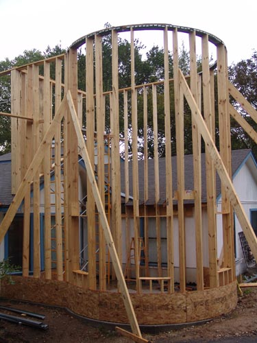
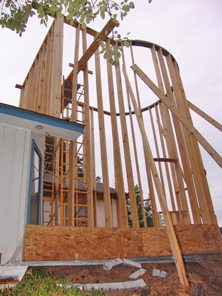
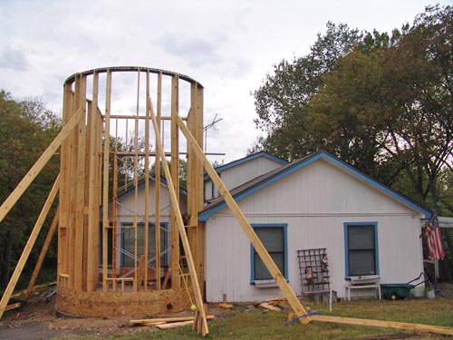

Here come the rains. Still, it's attached
to the house all around now, so stable enough for the storms.
First floor windows. I think we need
to decorate the garage since we'll have a ready view of it.

The first course of plywood was difficult
to bend, but it makes the thing so much more solid.

We decided to buy the scaffold, so
there's no rush in using it and it's tons cheaper than the rental cost
was going to be over the length of the project.
That back wall was fun to put up on the
house. The roof gave us a lot more room for working.

I'm impatient, but it does seem to
be getting together a lot faster than the kitchen did....
Oh, and I got the satellite dish moved
to the back of the house, so it's not in the way anymore.